|
4-2-3-1
|
Algeria | 3 | - | 3 | Austria |
4-2-3-1
|
| HT 1-1 | ||||||
|
FIFA World CupSunday 28 June 2026
|
||||||
- Venue
- Kansas City Stadium
- Attendance
- 69,045
- Referee
- Ilgiz Tantashev
Goal45'
R. Belghali
Goal60'
R. Mahrez
Assist: H. Aouar
- 3
Substitution71'
J. Hadjam
R. Aït-Nouri
A. Gouiri
Z. Belaïd
R. Belghali
S. Chergui
Goal90+3'
R. Mahrez
Assist: H. Aouar
Substitution90+4'
H. Aouar
F. Ghedjemis
Whistle45+5'
45+5'
Yellow card11'
M. Arnautović
Goal28'
M. Arnautović
Assist: D. Alaba
- 3
Substitution46'
M. Arnautović
M. Gregoritsch
X. Schlager
F. Grillitsch
R. Schmid
P. Wanner
Goal55'
M. Sabitzer
Assist: K. Laimer
Substitution62'
D. Alaba
K. Danso
Substitution90+5'
P. Mwene
S. Kalajdžić
Goal90+6'
S. Kalajdžić
Assist: M. Gregoritsch
Algeria | |
|---|---|
Goalkeeper | |
| 16 | O. Benbot |
Defender | |
| 2 | A. Mandi |
| 13 | J. Hadjam 71' |
| 17 | R. Belghali 45'71' |
| 21 | R. Bensebaini |
Midfielder | |
| 7 | R. Mahrez 60'90+3' |
| 8 | H. Aouar 90+4' |
| 10 | F. Chaïbi |
| 19 | N. Bentaleb |
| 22 | I. Maza |
Forward | |
| 9 | A. Gouiri 71' |
Substitutes | |
| 5 | Z. Belaïd 71' |
| 15 | R. Aït-Nouri 71' |
| 25 | F. Ghedjemis 90+4' |
| 26 | S. Chergui 71' |
Austria | |
Goalkeeper | |
| 1 | A. Schlager |
Defender | |
| 5 | S. Posch |
| 8 | D. Alaba 62' |
| 15 | P. Lienhart |
| 16 | P. Mwene 90+5' |
Midfielder | |
| 4 | X. Schlager 46' |
| 6 | N. Seiwald |
| 9 | M. Sabitzer 55' |
| 18 | R. Schmid 46' |
| 20 | K. Laimer |
Forward | |
| 7 | M. Arnautović 11'28'46' |
Substitutes | |
| 3 | K. Danso 62' |
| 10 | F. Grillitsch 46' |
| 11 | M. Gregoritsch 46' |
| 14 | S. Kalajdžić 90+5'90+6' |
| 24 | P. Wanner 46' |


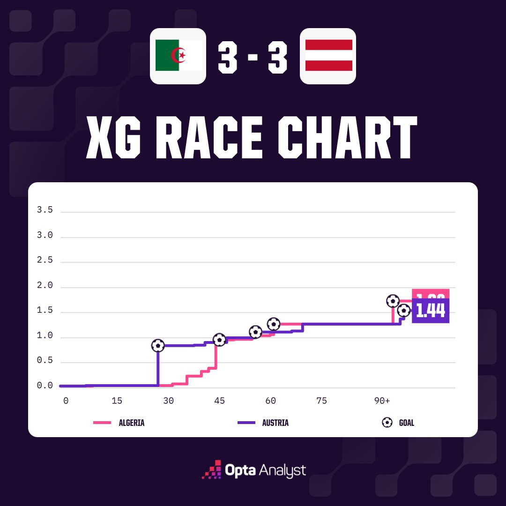
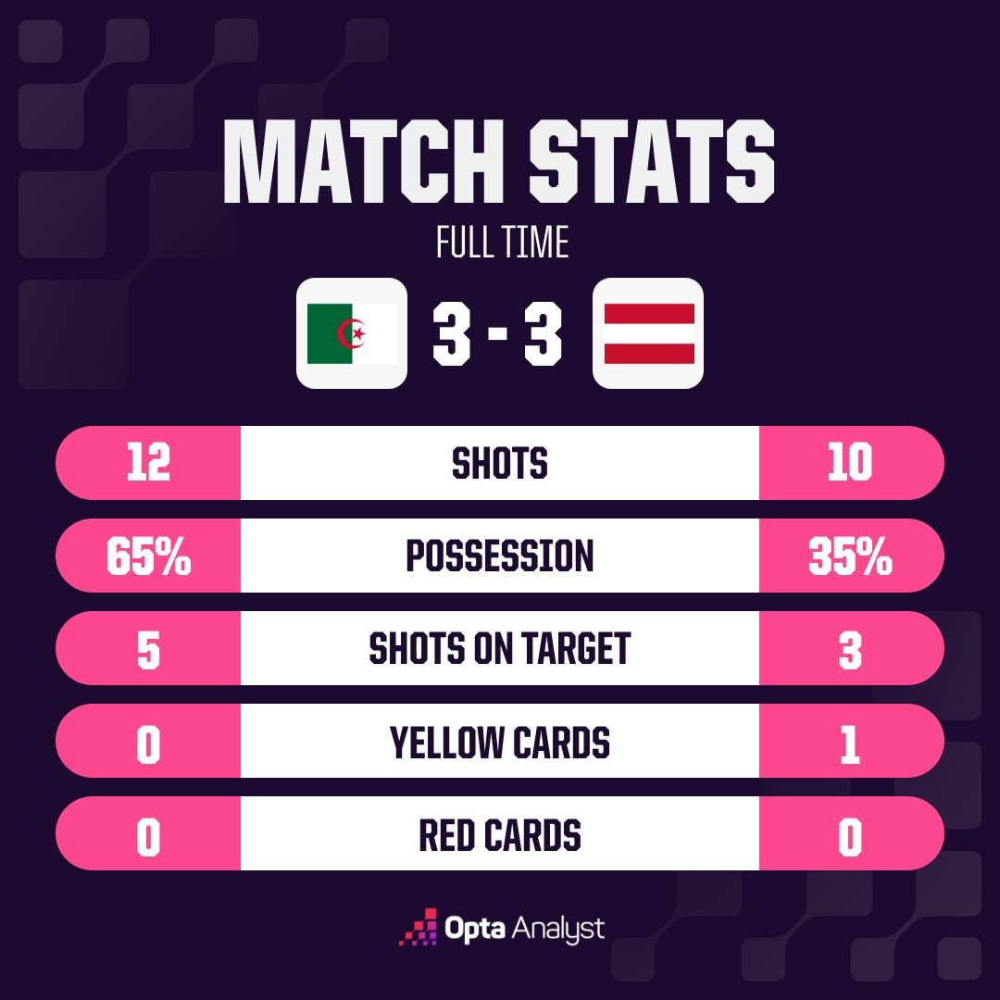
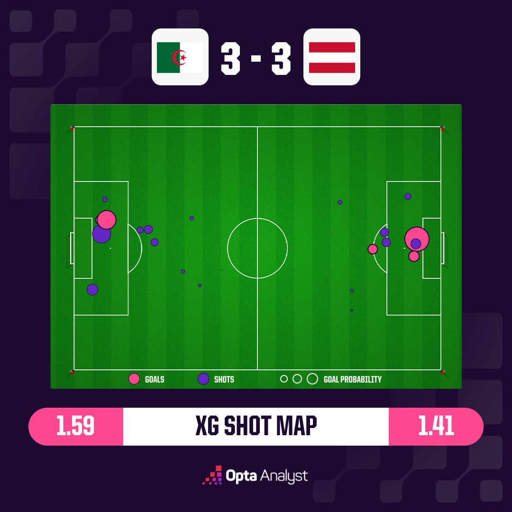
90+7'
That's it! The referee blows the whistle and we have reached full-time. The final score at Kansas City Stadium is Algeria 3-3 Austria.
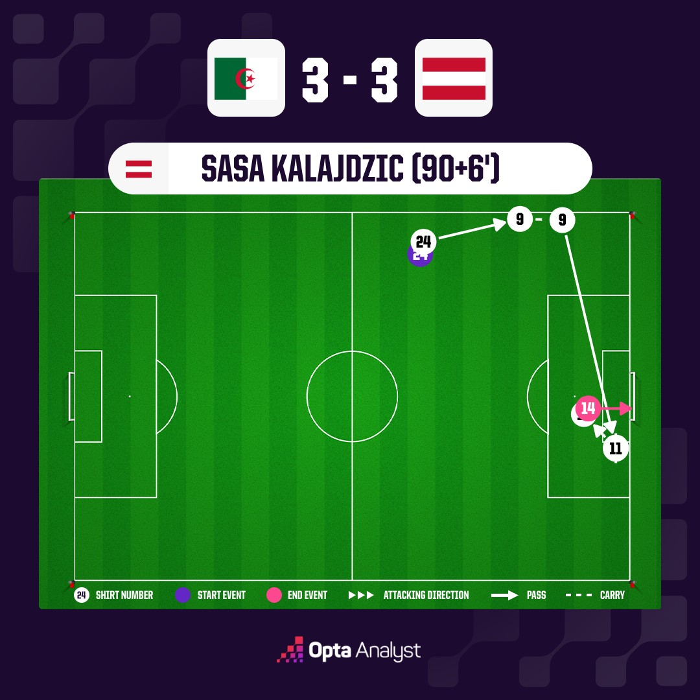
90+6'
Michael Gregoritsch has assisted his first goal in the 2026 FIFA World Cup.
90+6'
Austria have scored 3 goals in the FIFA World Cup game for the first time since 17th June 2026 against Jordan (W3-1).
90+6'
Sasa Kalajdžić has scored his first goal in the 2026 FIFA World Cup.
90+6'
GOAL! Parity is restored by Sasa Kalajdžić, who has hit home from inside the box to drag Austria level. Algeria had been hoping to see this out, but now might have to settle for a draw. Unless, there is to be a late winner…
90+5'
No luck! Philipp Lienhart takes on a shot that, had they got it right, might have been set to test the goalkeeper, but instead it is sent off target and Algeria come away unscathed.
90+5'
Substitution! Sasa Kalajdžić replaces Phillipp Mwene for Austria as the manager shuffles the pack. Can Sasa Kalajdžić make an impression as this match continues?
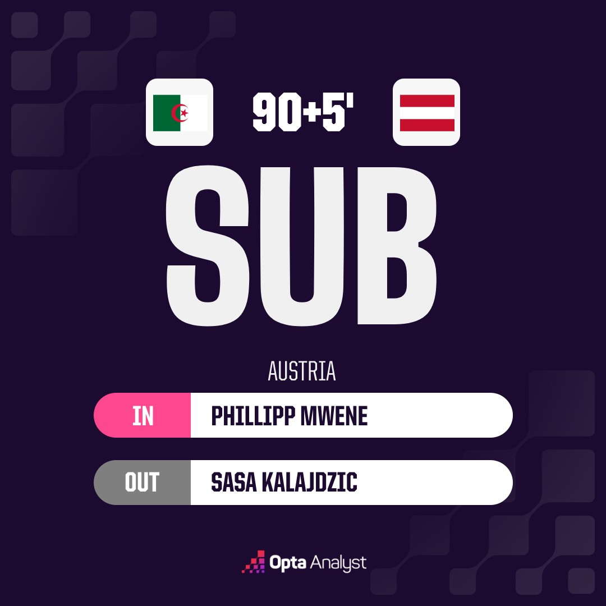
90+4'
Substitution! Farès Ghedjemis replaces Houssem Aouar for Algeria as the manager shuffles the pack. Can Farès Ghedjemis make an impression as this match continues?
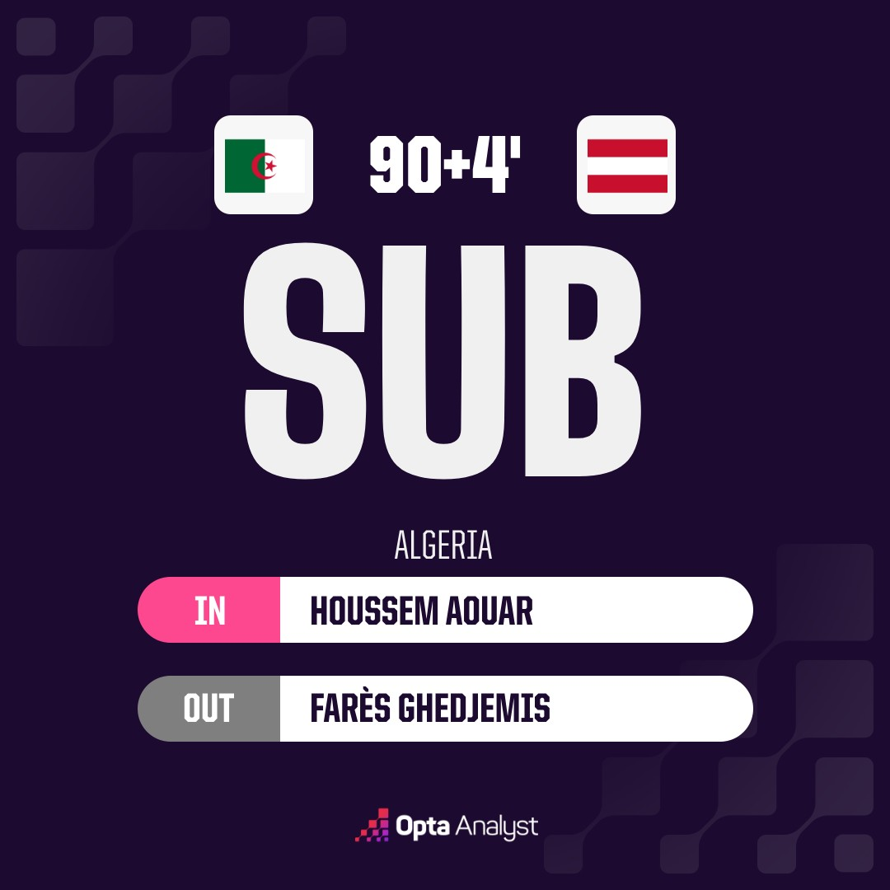
90+3'
Houssem Aouar has assisted his second goal in the 2026 FIFA World Cup.
90+3'
Algeria have scored 3 goals in the FIFA World Cup game for the first time since 22nd June 2014 against Korea Republic (W4-2).
90+3'
Riyad Mahrez has scored his second goal of the 2025 FIFA World Cup this edition, more than any other Algeria player.
90+3'
GOAL! Will that be the winner for Algeria? They have gone ahead in the closing stages thanks to Riyad Mahrez, who kept his cool to finish from inside the area. Will they hold on, or can Austria fight back?
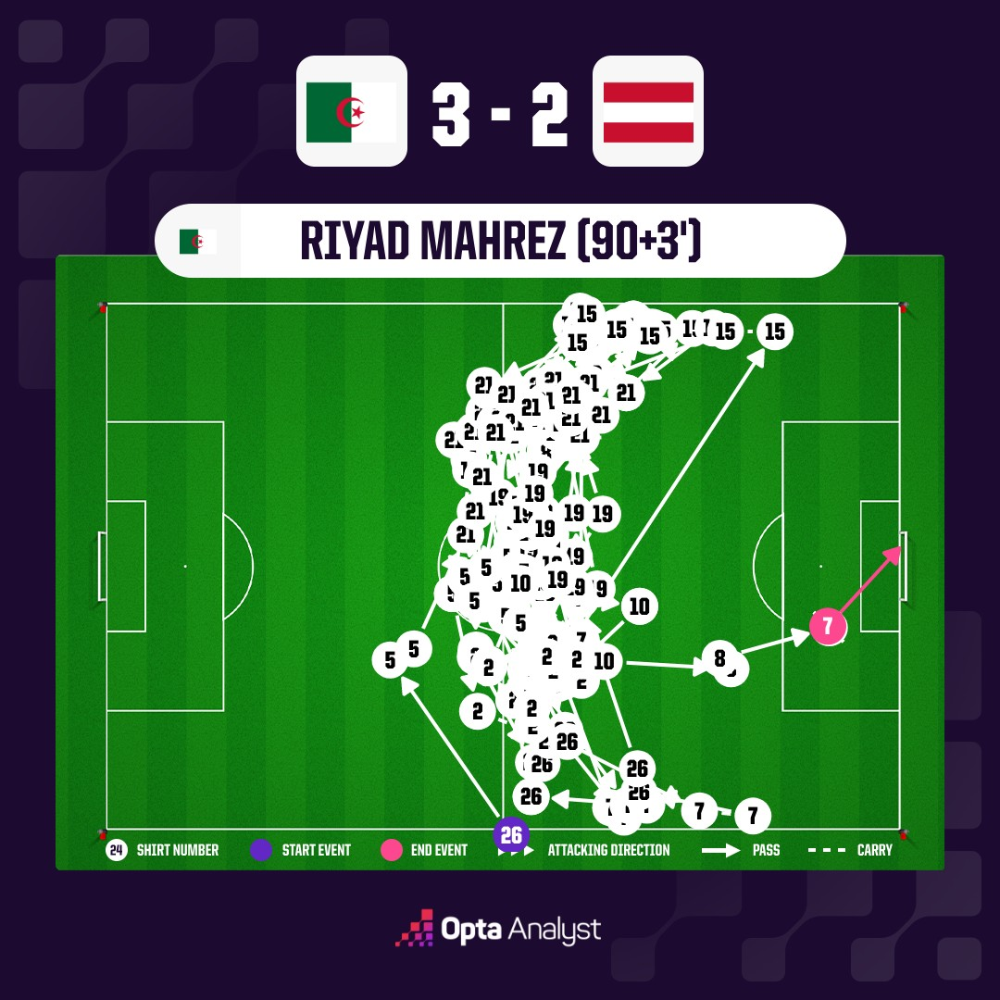
90+1'
It has been 30 minutes since Algeria last attempted a shot in this game.
88'
Neither team has had a shot in the past 10 minutes, as this match just enters something of a down period. Algeria have seen more of the ball, with 82 per cent possession, but Austria are keeping them away from goal. There is still a chance the match will spark into life, though.
84'
A lapse in concentration from Zineddine Belaïd, as they stray offside and bring to an end what was a promising move for Algeria, who are pushing hard for the goal they so desperately want.
83'
Foul! A free-kick now in a dangerous area for Algeria, after Riyad Mahrez is fouled by Florian Grillitsch. Can Algeria make the most of this opportunity?
81'
Algeria are having plenty of the ball, with 65.12% possession in the last 15 minutes. However, they have been unable to transfer that possessional dominance into a goal during that spell, and are not even generating shooting opportunities, so Austria may not be unduly alarmed.
78'
Free-kick! A foul from Rayan Aït-Nouri on Paul Wanner. It is well away from Algeria’s goal, so it is unlikely to result in a chance for Austria.
78'
This game is certainly in a bit of a lull now, with neither team having had an attempt at goal in the past 10 minutes. It could do with something to spark it into life. Algeria have had more possession during the quiet spell, but are yet to do much with it.
77'
Neither side wants to be the first to blink here. Algeria with another patient 20+ pass sequence - in these dying minutes, one mistake could be fatal.
76'
With 15 minutes left to play, plus stoppage time, it is Algeria who have had the better of the possession, with 57.78%. Austria, on the other hand, have had 42.22% of the ball so far.
71'
The Algeria manager is looking to the substitutes’ bench, bringing on Samir Chergui in place of Rafik Belghali. Will the change make a difference? Let’s find out!
71'
Algeria are making a tactical change. Amine Gouiri is leaving the field and in their place comes Zineddine Belaïd – we will soon see if this switch has the desired impact.
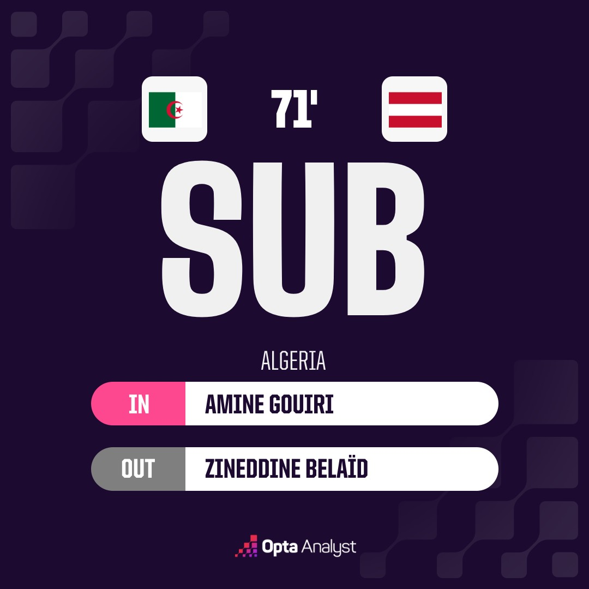
71'
The Algeria manager is looking to the substitutes’ bench, bringing on Rayan Aït-Nouri in place of Jaouen Hadjam. Will the change make a difference? Let’s find out!
68'
MISS! How has that not gone in? A complete lack of composure shown from Kevin Danso, who squanders a golden chance for Austria, whose coach looks on frustrated from the touchline. A real let off for Algeria!
66'
With 25 minutes left to play, it’s a good chance to check in on the shot count. Algeria have mustered 11 so far, with 4 of those landing on target. On the other hand, Austria have gotten 7 of their 2 of attempts on target.
65'
No luck! Nicolas Seiwald takes on a shot that, had they got it right, might have been set to test the goalkeeper, but instead it is sent off target and Algeria come away unscathed.
64'
Free-kick! A foul from Houssem Aouar on Stefan Posch. It is well away from Algeria’s goal, so it is unlikely to result in a chance for Austria.
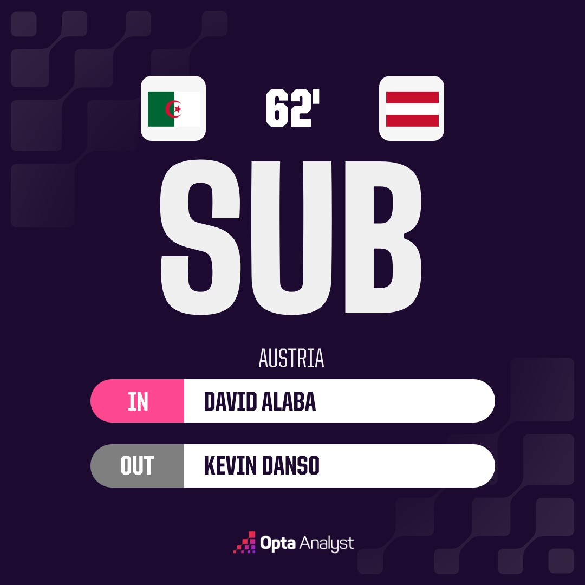
62'
The Austria manager is looking to the substitutes’ bench, bringing on Kevin Danso in place of David Alaba. Will the change make a difference? Let’s find out!
60'
Houssem Aouar has assisted his first goal in the 2026 FIFA World Cup.
60'
GOAL! It isl level now, after Riyad Mahrez’s finish from inside the penalty area. They found enough space to get a shot off, and now parity is restored. Can Algeria take that momentum on and go and win it now?
60'
Riyad Mahrez has scored his first goal in the 2026 FIFA World Cup.
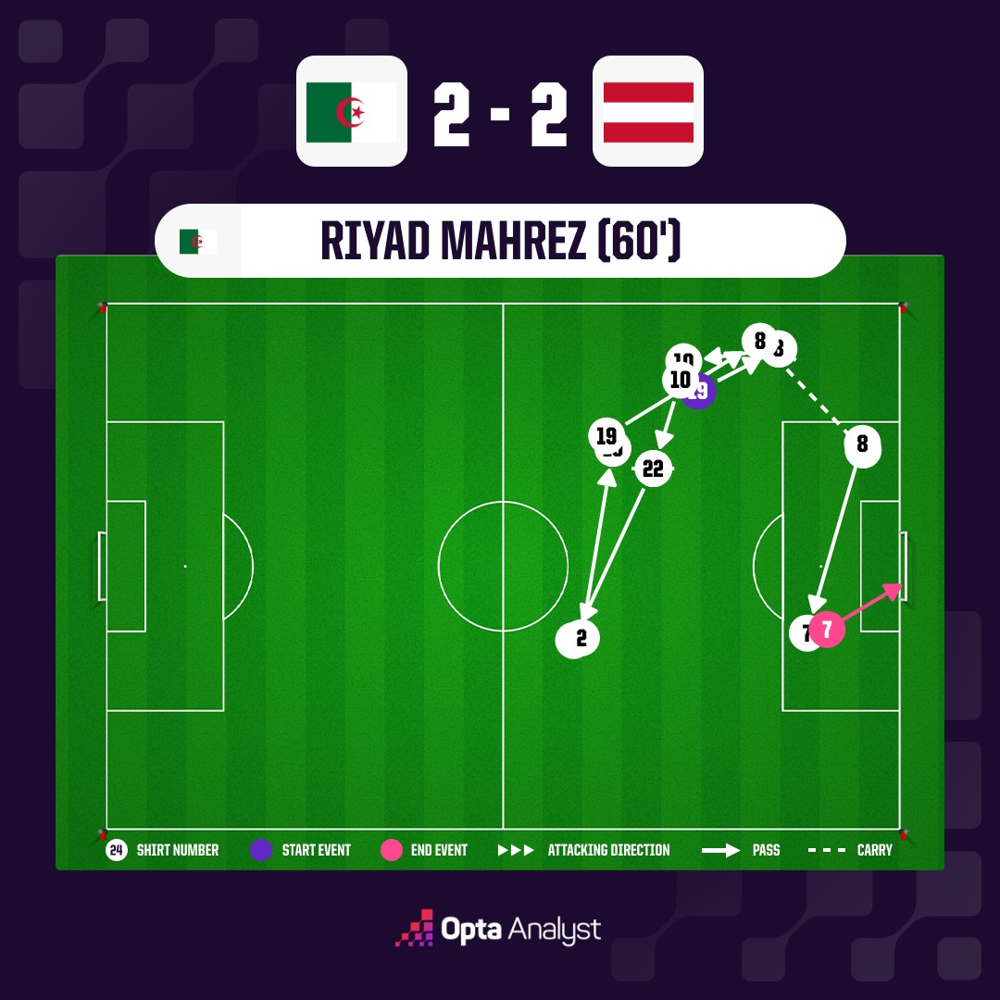
59'
That might have been going in! A fantastic block from Florian Grillitsch, who gets in the way of a goal-bound effort from Farès Chaïbi. Would the goalkeeper have been beaten? We will never know.
58'
A free-kick to Algeria, as Florian Grillitsch goes in and fouls Farès Chaïbi. However, Austria will not mind giving one away in this area too much, with plenty of distance to their goal.
57'
A good response from Algeria- steady on the ball now and looking to take control after falling behind.
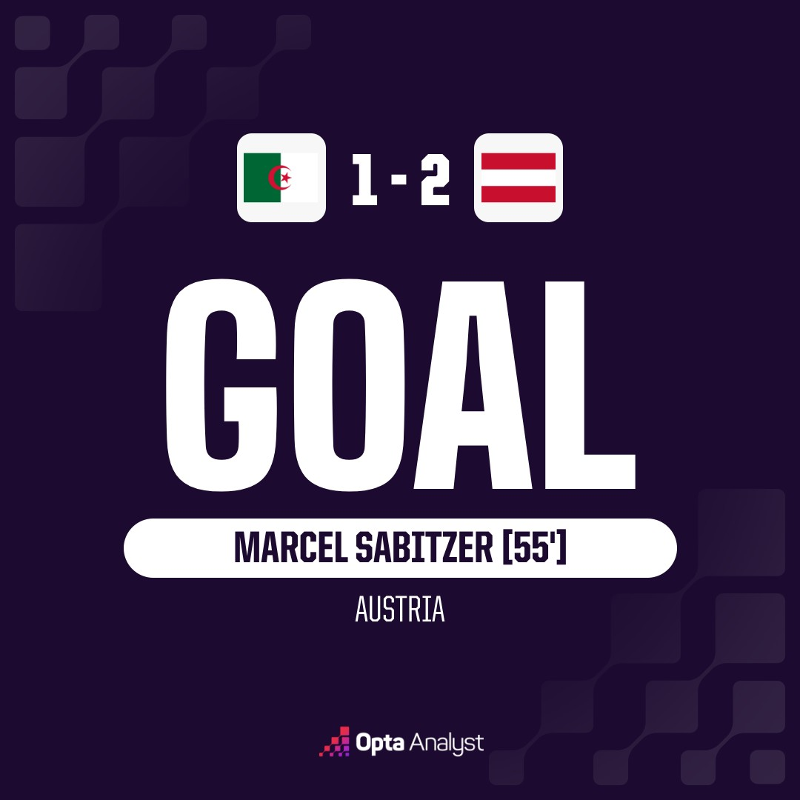
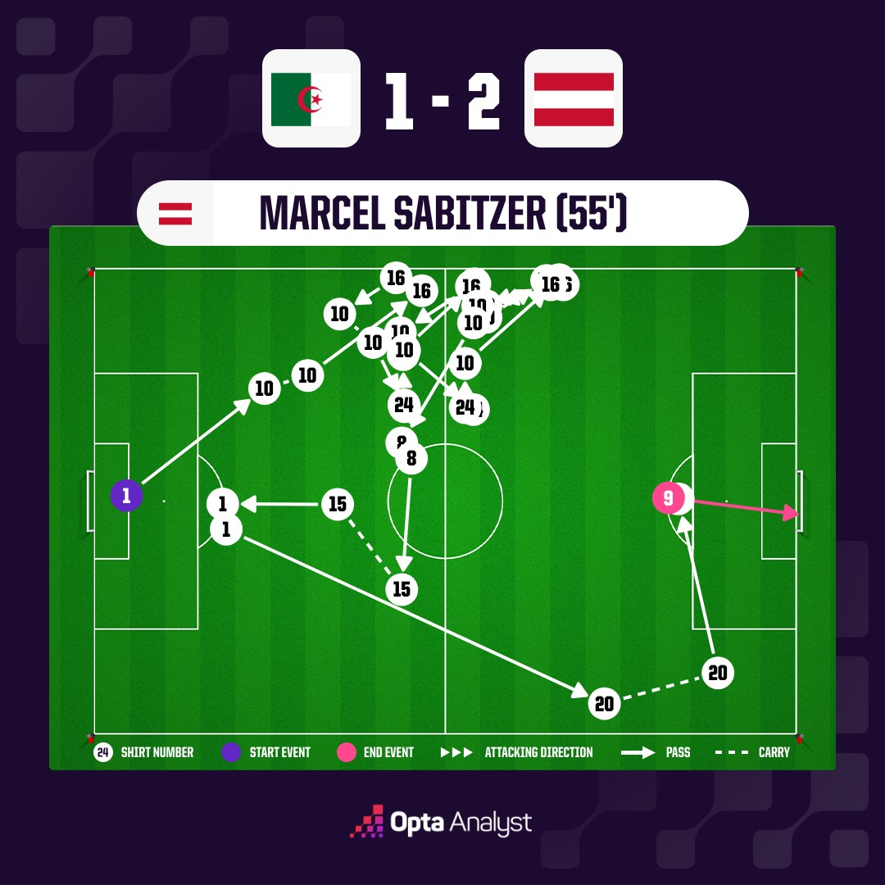
55'
Konrad Laimer has assisted his first goal in the 2026 FIFA World Cup.
55'
GOAL! Austria are in front! It is a strike from outside the area that has given them the lead, with Marcel Sabitzer getting the goal. It is far from game over yet, but now Austria have an advantage that they will try to hold onto.
55'
Marcel Sabitzer has scored his first goal in the 2026 FIFA World Cup.
54'
SAVE! A shot from outside the box by Algeria Farès Chaïbi was heading in, but Austria Alexander Schlager keeps it out with a smart stop.
49'
MISS! A shot from Ramy Bensebaini ends up being off target. They might have done a bit better with that one, but it remains Algeria 1-1 Austria.
46'
Substitution! Paul Wanner replaces Romano Schmid for Austria as the manager shuffles the pack. Can Paul Wanner make an impression as this match continues?
46'
Substitution! Florian Grillitsch replaces Xaver Schlager for Austria as the manager shuffles the pack. Can Florian Grillitsch make an impression as this match continues?
46'
A substitution for Austria sees Marko Arnautović replaced by Michael Gregoritsch. There does not appear to be any obvious sign of an injury, so that is a tactical switch.
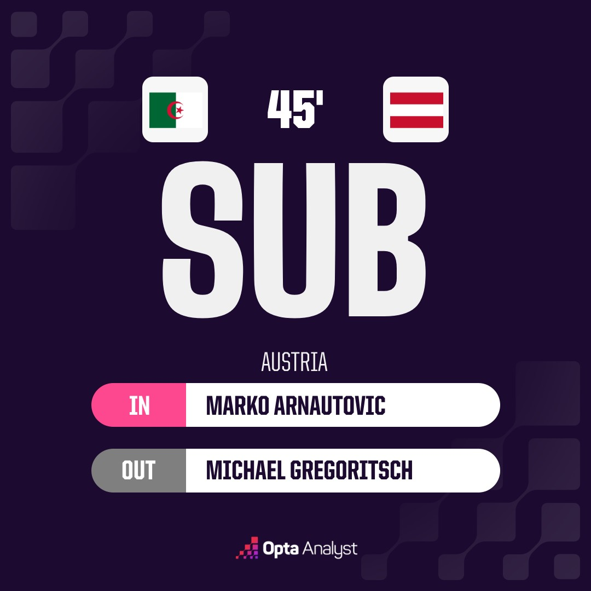
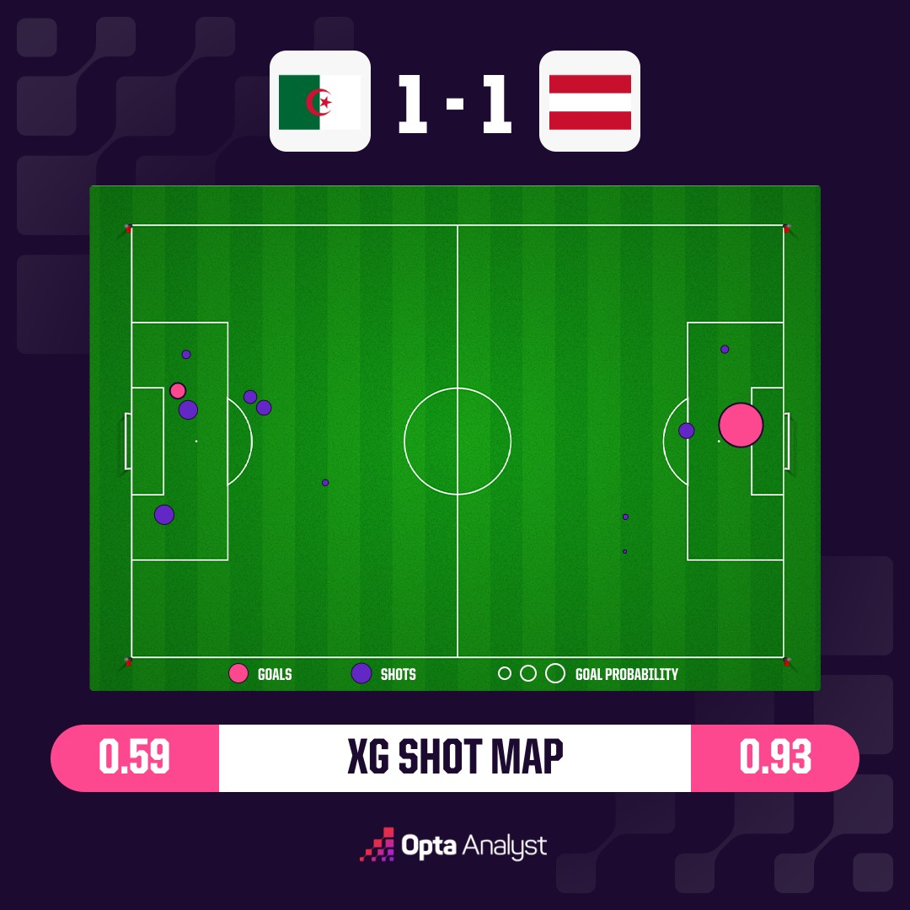
45+5'
Half-time! We reach the interval with the score level at 1-1 between Algeria and Austria. Will we see a winner in the second half?
45+4'
Algeria showing great composure despite going behind early - their passing flow remains intact as they work to get back into this contest.
45+2'
Xaver Schlager goes in on Oussama Benbot and concedes a foul. The free-kick is not in a particularly dangerous area from Austria’s viewpoint, though.
45+2'
Shot blocked! Nicolas Seiwald unleashes an attempt at goal, but the ball does not reach its target thanks to Farès Chaïbi, who makes a solid block to stem the danger – for now.
45+1'
Corner! Austria are pushing for a goal and now they have an opportunity from this set-piece.
45+1'
GOAL! Rafik Belghali scores from inside the penalty area and it’s all level between Algeria and Austria. All to play for now, can either side go on and find a winner?
45+1'
Rafik Belghali has scored his first goal in the 2026 FIFA World Cup.
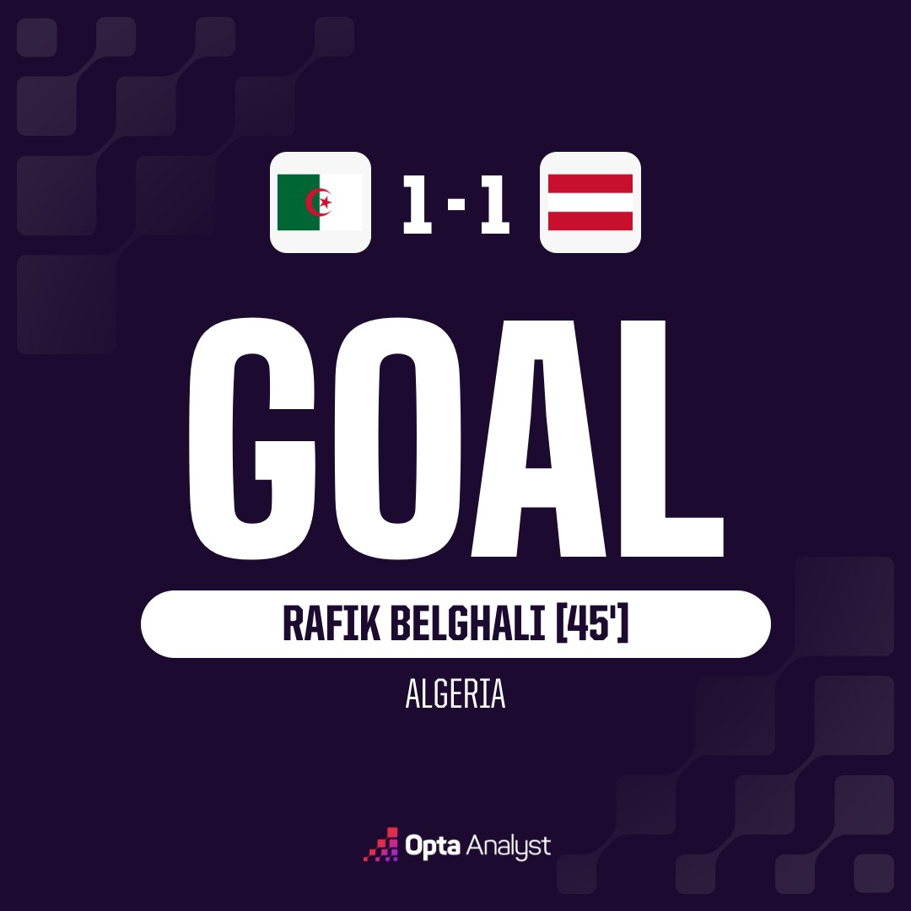
44'
WHAT A MISS! Oh dear, oh dear, that is an awful attempt from Ibrahim Maza, as a huge chance for Algeria to score the goal they need goes begging. What a let off for Austria, though. They will have to defend better than that from here on out!
43'
In the last 15 minutes, it is Algeria who have dominated the ball, having seen 65.27% of the possession, yet they have not been able to go and turn that into a goal just yet, with their opponents standing firm.
42'
Free-kick! A foul from Romano Schmid on Riyad Mahrez. It is well away from Austria’s goal, so it is unlikely to result in a chance for Algeria.
42'
Great block from Xaver Schlager, as they get in the way of an attempt from Riyad Mahrez that might have been set to cause the goalkeeper some problems. Solid defending from the Austria player.
42'
Great defending from Austria, who are staying organised and winning key battles to preserve their lead.
41'
A chance goes begging as Phillipp Mwene gets off a shot that does not hit the target. They might have done better with that one, but instead it is a goal-kick to Algeria.
41'
Algeria have not had a shot on target so far in this game.
39'
That’s offside! A switched-on defensive line from Algeria, as they step up at the right time to catch Marko Arnautović offside, and the assistant referee’s flag is up.
38'
MISS! The score remains 1-0, with Algeria relieved after Austria’s Romano Schmid goes for goal but sends their attempt off target. Not one to write home about, that one.
36'
That is a disappointing effort from Ibrahim Maza, who went for glory but got their attempt wrong, and the shot sailed off target. A frustrating moment for Algeria.
33'
Despite trailing, Algeria are showing real defensive grit, digging in and stopping further damage as they try to build a platform.
32'
A chance goes begging as Rafik Belghali gets off a shot that does not hit the target. They might have done better with that one, but instead it is a goal-kick to Austria.
30'
No luck – it’s offside! Marko Arnautović looked to dart in behind and get on the end of a pass, yet they just went too early, and the flag is up to signal offside.
28'
David Alaba has assisted his first goal in the 2026 FIFA World Cup.
28'
GOAL! Austria have scored and it is Marko Arnautović who has put them in the lead! Marko Arnautović applies the finish and while that is not game over for Algeria, they have plenty of work to do now! We will see if that strike proves to be the winner!
28'
Marko Arnautović has scored his second goal in the 2026 FIFA World Cup, netting for the first time since 17th June 2026 against Jordan.
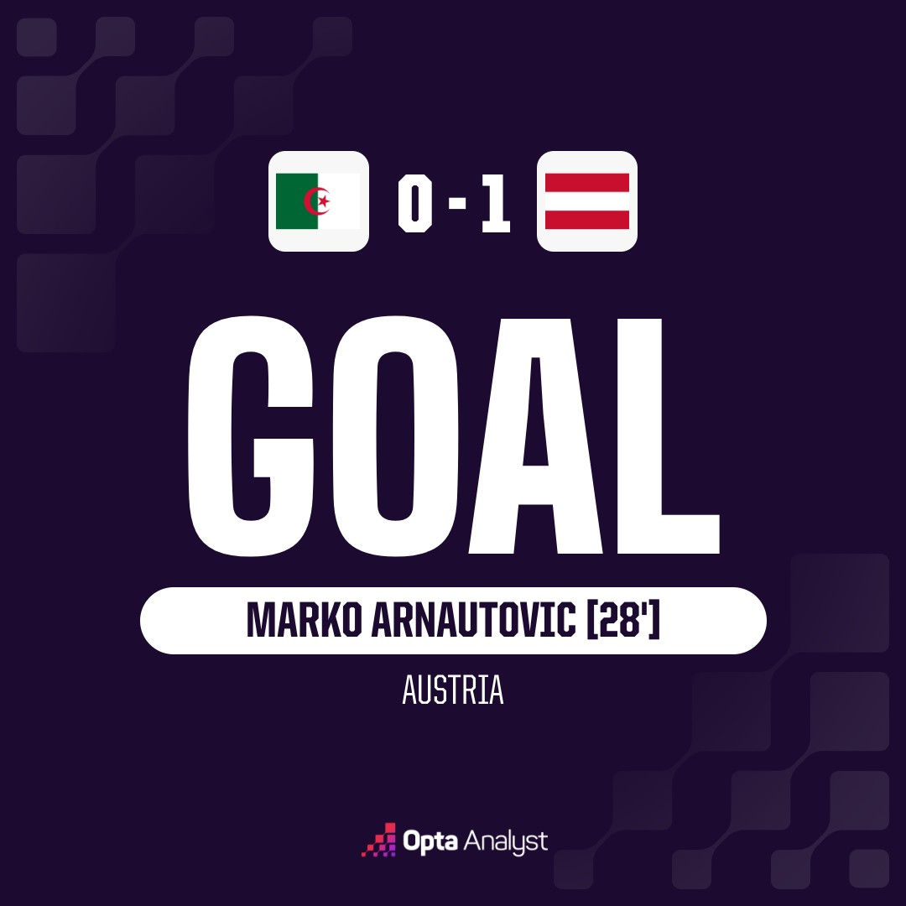
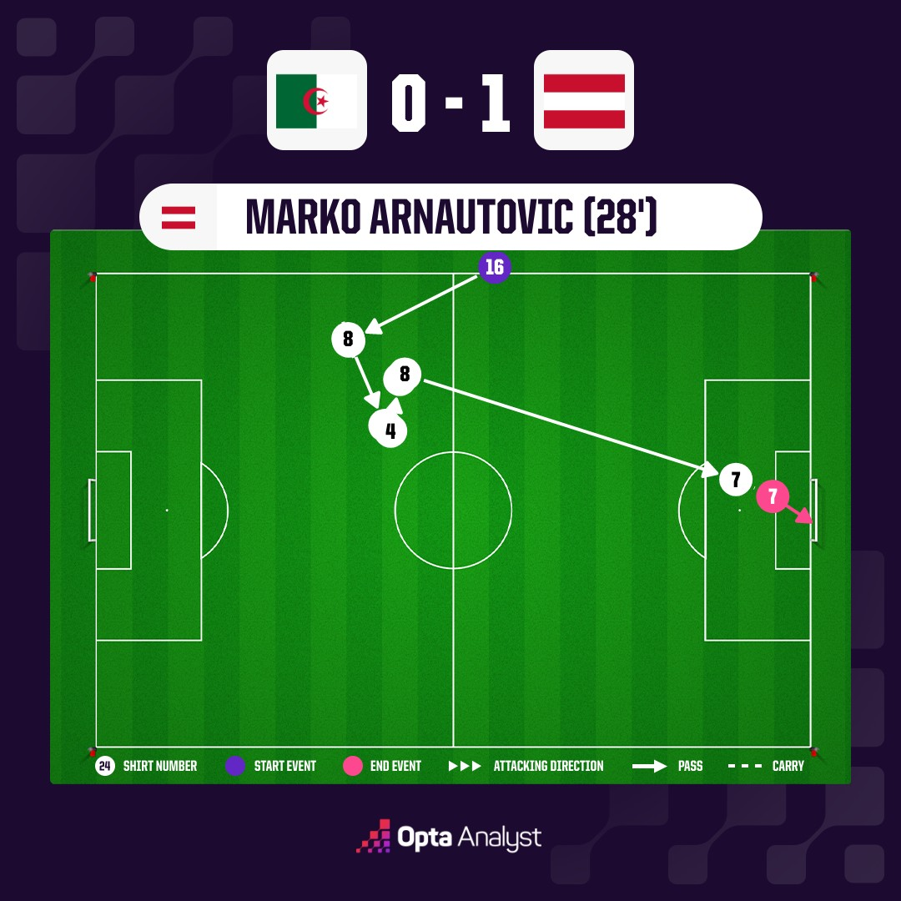
20'
Not much goalmouth action to speak of in this period of the game, with no attempts made from either side. This game could spark at any moment, however. It is Algeria who have had more of the ball, controlling 71 per cent possession in the last 10 minutes.
19'
Offside! Konrad Laimer thought they were through on goal, but the Algeria defence stepped up in time to catch them offside, and the assistant referee puts their flag up.
17'
There is plenty of possession for Algeria, with 65.06% compared to Austria 34.94 % in the last 15 minutes. However, Algeria have not been able to turn that dominance of the ball into a goal.
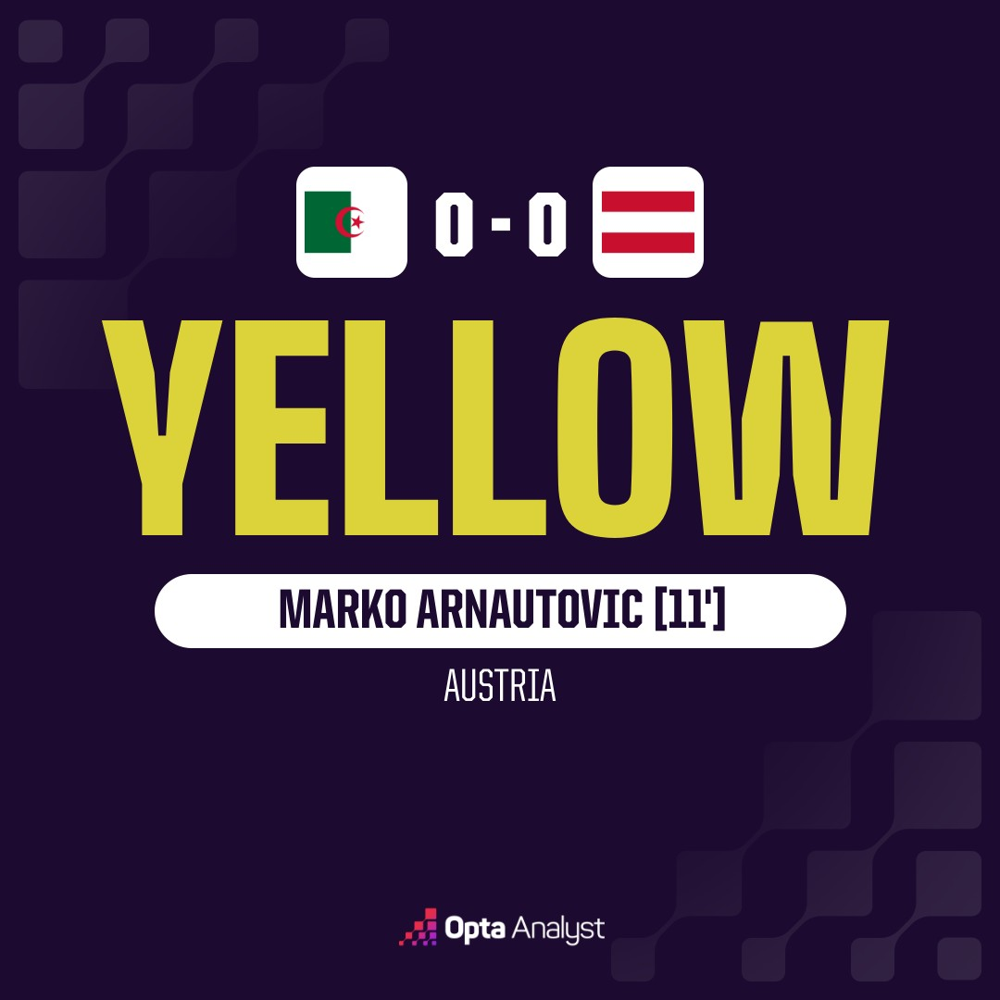
11'
Yellow card! Marko Arnautović will have to be careful from now on after they are cautioned.
11'
Marko Arnautović goes in on Aïssa Mandi and concedes a foul. The free-kick is not in a particularly dangerous area from Austria’s viewpoint, though.
10'
MISS! A shot from Ibrahim Maza ends up being off target. They might have done a bit better with that one, but it remains Algeria 0-0 Austria.
8'
That is a disappointing effort from Xaver Schlager, who went for glory but got their attempt wrong, and the shot sailed off target. A frustrating moment for Austria.
7'
It’s been tight so far, and Austria are making sure it stays that way with strong defensive discipline and well-timed clearances.
7'
Free-kick! A foul from Marcel Sabitzer on Ibrahim Maza. It is well away from Austria’s goal, so it is unlikely to result in a chance for Algeria.
3'
A rash challenge from Riyad Mahrez, who sends Phillipp Mwene tumbling, giving Austria a free-kick. It is not in a threatening position, but it gives them a chance to get back on the ball.
1'
Up and running! Austria have kicked off and this FIFA World Cup match is now under way at Kansas City Stadium. Let’s hope for an intriguing battle on the pitch.
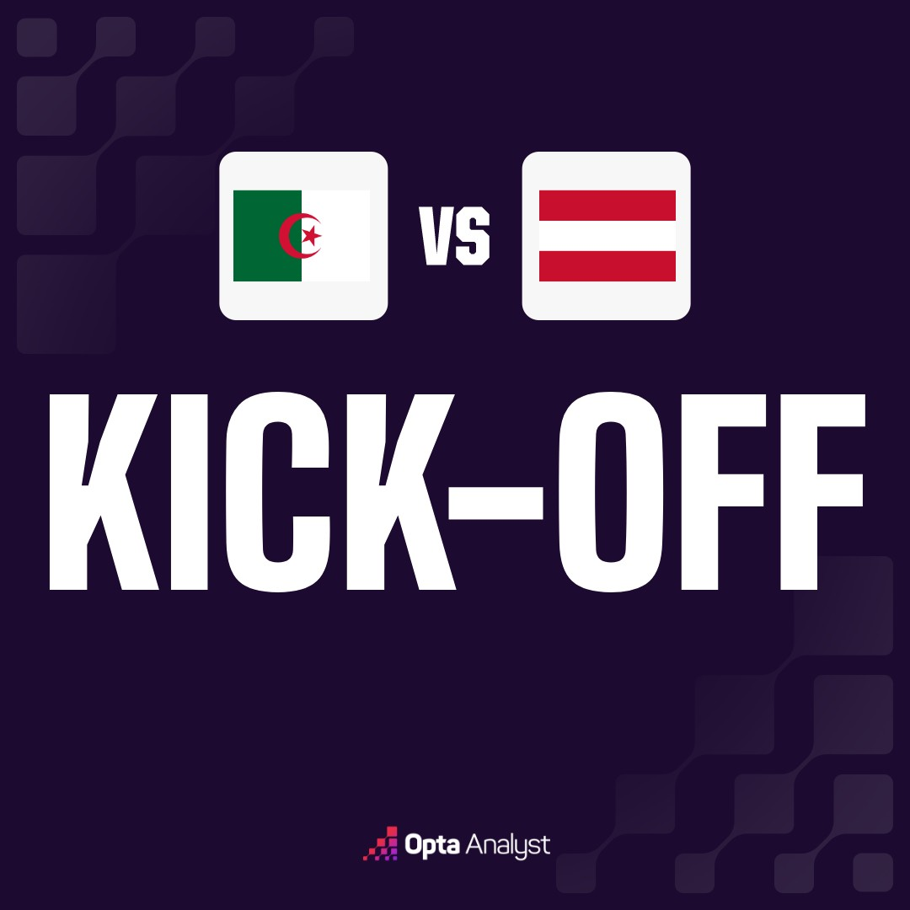
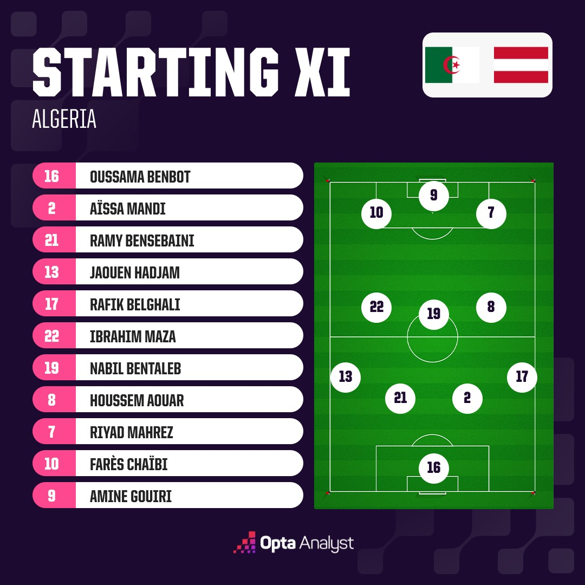
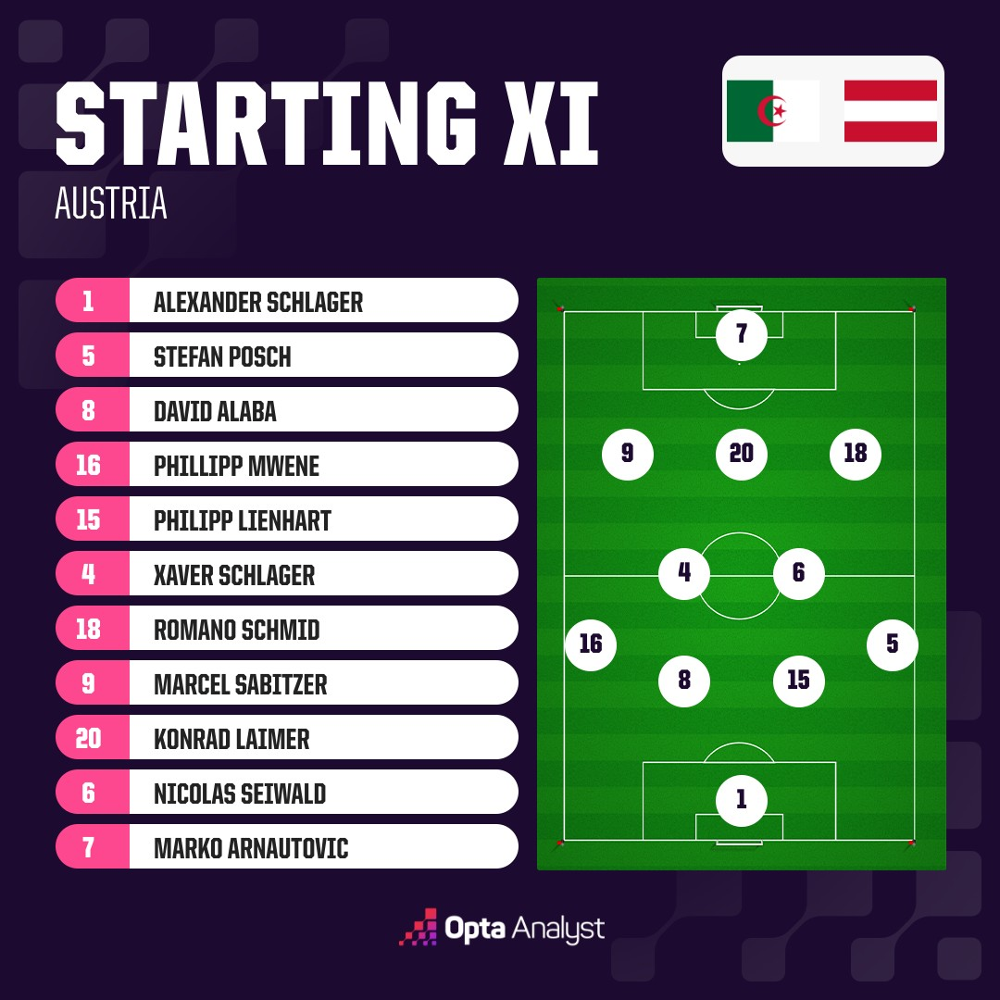
Algeria take on Austria for a FIFA World Cup group stage match at Kansas City Stadium on Saturday with the Austrian side looking to secure a place in the Round of 32.
Algeria were victorious for the first time in the competition this season when they defeated Jordan 2-1 in their last group stage match on June 22. Nadhir Benbouali and Amine Gouiri netted in the win. In eight games this year, they have five wins, one draw, and two losses.
Austria suffered a first competition loss of the year in a 2-0 defeat against Argentina in their last group stage game, a June 22 clash at Dallas Stadium. In 2026, they have won four and lost one.
Austria and Algeria are second and third in the group, respectively, level on three points. Austria are currently in line for the Round of 32, while Algeria are out of the knockout round places but still on for a place in the round of 32.
Atop the group on six points are Argentina, who have clinched their place in the Round of 32. Jordan are facing elimination, sitting fourth on zero points.
Austria won the previous encounter between the sides, coming out on top 2-0 in June 1982.
Gouiri and Benbouali have proved attacking threats for Algeria in World Cup play. The pair are the team's joint top scorers with one goal. Austria have been thankful to Romano Schmid and Marko Arnautovic, who have each netted once in this World Cup campaign.
In their last six matches in all competitions, Algeria have won four, drawn one and lost one. The Algerian side scored 14 and conceded four over that period, scoring first in three of the six contests. They had four first-half goals, while their opponents netted two times in the first 45 minutes. The Austrian side have won four, drawn one and lost one in their last six. The Austrian side scored 11 and conceded five over that period, netting first in four of the six. They had two goals in the first half, while their opponents netted two times before the break.
-
General
Possession 65.0% 65.04334.95735.0% Possession lost in defensive half 25 252020 Possession lost in middle third 33 333131 Duels 64 646262 Duels success rate 53.1% 53.12545.16145.2% Aerial duels 14 141414 Aerial duels won 28.6% 28.57171.42971.4% Successful dribbles 13 1344 Fouls won 7 733 Offsides 1 133 Corner awarded 0 033 -
Distribution
Passes 754 754396396 Long passes 44 443232 Long passes proportion (%) 5.8% 5.8368.0818.1% Passing accuracy 93.6% 93.63487.37487.4% Passes in opponents' half 437 437205205 Passing accuracy in opponents' half (%) 91.8% 91.7628080.0% Total passes in the final third 135 1359898 Passing accuracy in final third (%) 83.0% 82.96376.53176.5% Forward passes 401 401217217 Forward passes (%) 53.2% 53.18354.79854.8% Through balls 1 122 Final third entries 62 623939 Penalty area entries 10 101919 Total open play crosses 5 51111 Crosses 5 51313 Crossing accuracy 0.0% 023.07723.1% -
Attack
Goals 3 333 Shots 12 121010 Shots on target 5 533 Blocked shots 2 211 Headed shots 0 022 Shots outside the box 6 644 Shots inside the box 6 666 Shots accuracy excluding blocked shots 50.0% 5033.33333.3% Shooting accuracy 41.7% 41.6673030.0% Key Passes 10 1066 -
Defence
Tackles 11 111111 Tackles success rate 45.5% 45.45536.36436.4% Clearances 18 181919 Interceptions 4 41010 Recoveries 28 283737 Attacking third recovery 2 211 Defensive third recovery 11 111616 Midfield third recovery 15 152020 Recoveries in attacking half (%) 7.1% 7.1432.7032.7% -
Discipline
Fouls conceded 3 377 Yellow cards 0 011 Red cards 0 000